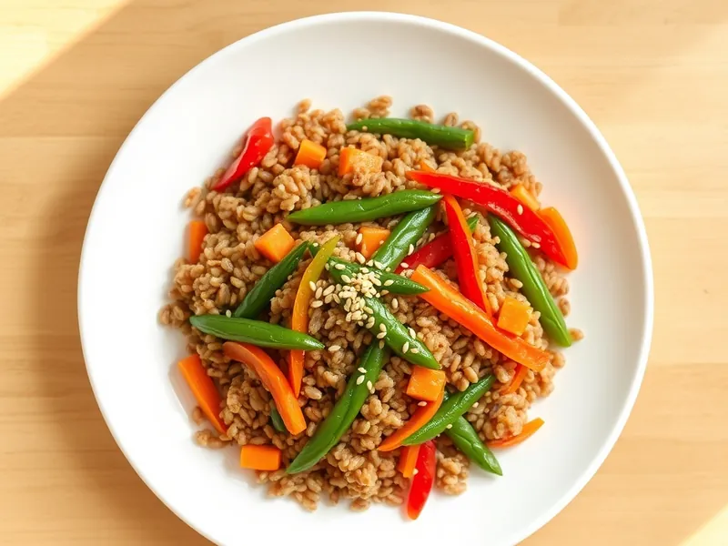

Фото: Иллюстрация ИИ, Cloudflare Workers AI
Гречка с овощами и соевым соусом по-азиатски
Гречка, обжаренная с морковью, перцем, стручковой фасолью, имбирём и кунжутом
30 мин3 порц.390 ккал на порциюБ 13 · Ж 14 · У 56Азиатская кухня
Продукты на 3 порц.
- Гречка1 стак.
- Вода2 стак.
- Морковь1 шт
- Перец болгарский1 шт
- Стручковая фасоль150 г
- Лук репчатый1 шт
- Чеснок2 зуб.
- Имбирь10 г
- Соевый соус2,5 ст. л.
- Растительное масло2 ст. л.
- Кунжут2 ч. л.
Как готовить
- Промойте гречку, залейте кипятком, слегка посолите и варите под крышкой на слабом огне 18 минут.
- Пока варится гречка, нарежьте морковь, перец и лук тонкой соломкой, натрите чеснок и имбирь.
- Разогрейте масло в сковороде на сильном огне и обжарьте морковь с луком 3 минуты, постоянно помешивая.
- Добавьте перец и стручковую фасоль и жарьте ещё 4 минуты, пока овощи не станут мягкими, но хрустящими внутри.
- Добавьте чеснок с имбирём и гречку, влейте соевый соус и жарьте всё вместе 2 минуты, помешивая.
- Посыпьте кунжутом и подавайте.
Совет. Овощи жарьте на сильном огне и не накрывайте крышкой: так они остаются хрустящими, а не тушёными.